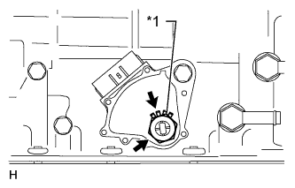
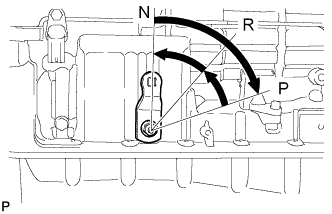
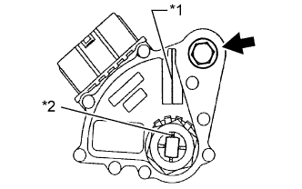
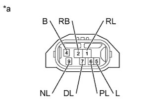

PARK / NEUTRAL POSITION SWITCH > INSTALLATION |
| 1. INSTALL PARK/NEUTRAL POSITION SWITCH ASSEMBLY |
Install the switch to the manual valve shaft.
Temporarily install the bolt.
|  |
Install a new lock washer and the nut.
| *1 | New Lock Washer |
|  |
Turn the control shaft lever LH clockwise until it stops, and then turn it counterclockwise 2 notches to set it to the N position.
|  |
Align the groove with the neutral basic line.
| *1 | Neutral Basic Line |
| *2 | Groove |
Hold the switch in position and tighten the bolt.
Using a screwdriver, bend the tabs of the lock washer.
Connect the switch connector.
| 2. INSPECT SHIFT LEVER POSITION |
When moving the shift lever from P to R with the engine switch on (IG) and the brake pedal depressed, make sure that it moves smoothly and correctly into position.
Check that the shift lever does not stop when moving the shift lever from R to P, and check that the shift lever does not stick when moving the shift lever from D to S.
Start the engine and make sure that the vehicle moves forward after moving the shift lever from N to D and moves in reverse after moving the shift lever to R.
If the operation cannot be performed as specified, inspect the park/neutral position switch assembly and check the transmission floor shift assembly installation condition.
| 3. INSPECT PARK/NEUTRAL POSITION SWITCH ASSEMBLY |
|  |
Measure the resistance according to the value(s) in the table below.
| Tester Connection | Condition | Specified Condition |
| Shift lever in P | Below 1 Ω |
| 2 (RB) - 1 (RL) | Shift lever in R | Below 1 Ω |
| Shift lever in N | Below 1 Ω |
| 2 (RB) - 7 (DL) | Shift lever in D, S, "+" or "-" | Below 1 Ω |
| Shift lever not in P | 10 kΩ or higher |
| 2 (RB) - 1 (RL) | Shift lever not in R | 10 kΩ or higher |
| Shift lever not in N | 10 kΩ or higher |
| 2 (RB) - 7 (DL) | Shift lever not in D, S, "+" or "-" | 10 kΩ or higher |
| *a | Component without harness connected (Park/Neutral Position Switch) |